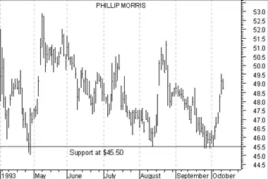
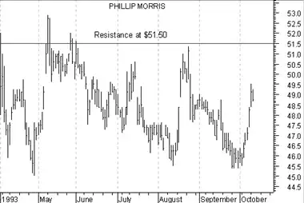
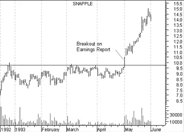
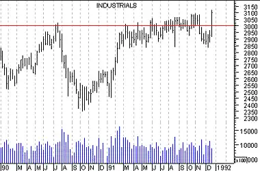
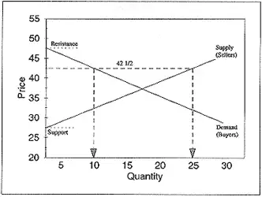
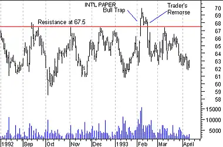
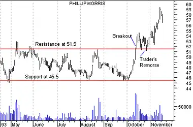

Introduction - Support & Resistance
Support and Resistance
Think of security prices as the result of a head-to-head battle between a bull (the buyer) and a bear (the seller). The bulls push prices higher and the bears push prices lower. The direction prices actually move reveals who is winning the battle.
Using this analogy, consider the price action of Phillip Morris in Figure 6. During the period shown, note how each time prices fell to the $45.50 level, the bulls (i.e., the buyers) took control and prevented prices from falling further. That means that at the price of $45.50, buyers felt that investing in Phillip Morris was worthwhile (and sellers were not willing to sell for less than $45.50). This type of price action is referred to as support, because buyers are supporting the price of $45.50.
Figure 6
Similar to support, a "resistance" level is the point at which sellers take control of prices and prevent them from rising higher. Consider Figure 7. Note how each time prices neared the level of $51.50, sellers outnumbered buyers and prevented the price from rising.
Figure 7
The price at which a trade takes place is the price at which a bull and bear agree to do business. It represents the consensus of their expectations. The bulls think prices will move higher and the bears think prices will move lower.
Support levels indicate the price where the majority of investors believe that prices will move higher, and resistance levels indicate the price at which a majority of investors feel prices will move lower.
But investor expectations change with time! For a long time investors did not expect the Dow Industrials to rise above 1,000 (as shown by the heavy resistance at 1,000 in Figure 8). Yet only a few years later, investors were willing to trade with the Dow near 2,500.
Figure 8

When investor expectations change, they often do so abruptly. Note how when prices rose above the resistance level of Hasbro Inc. in Figure 9, they did so decisively. Note too, that the breakout above the resistance level was accompanied with a significant increase in volume.
Figure 9

Once investors accepted that Hasbro could trade above $20.00, more investors were willing to buy it at higher levels (causing both prices and volume to increase). Similarly, sellers who would previously have sold when prices approached $20.00 also began to expect prices to move higher and were no longer willing to sell.
The development of support and resistance levels is probably the most noticeable and reoccurring event on price charts. The penetration of support/resistance levels can be triggered by fundamental changes that are above or below investor expectations (e.g., changes in earnings, management, competition, etc) or by self-fulfilling prophecy ( investors buy as they see prices rise). The cause is not as significant as the effect--new expectations lead to new price levels.
Figure 10 shows a breakout caused by fundamental factors. The breakout occurred when Snapple released a higher than expected earnings report. How do we know it was higher than expectations? By the resulting change in prices following the report!
Figure 10
Other support/resistance levels are more emotional. For example, the DJIA had a tough time changing investor expectations when it neared 3,000 (see Figure 11).
Figure 11
Supply and demand
There is nothing mysterious about support and resistance--it is classic supply and demand. Remembering "Econ 101" class, supply/demand lines show what the supply and demand will be at a given price.
The "supply" line shows the quantity (i.e., the number of shares) that sellers are willing to supply at a given price. When prices increase, the quantity of sellers also increases as more investors are willing to sell at these higher prices.
The "demand" line shows the number of shares that buyers are willing to buy at a given price. When prices increase, the quantity of buyers decreases as fewer investors are willing to buy at higher prices.
At any given price, a supply/demand chart (see Figure 12) shows how many buyers and sellers there are. For example, the following chart shows that, at the price of 42-1/2, there will be 10 buyers and 25 sellers.
Figure 12
Support occurs at the price where the supply line touches the left side of the chart (e.g., 27-1/2 on the above chart). Prices can't fall below this amount, because no sellers are willing to sell at these prices. Resistance occurs at the price where the demand line touches the left side of the chart (e.g., 47-1/2). Prices can't rise above this amount, because there are no buyers willing to buy at these prices.
In a free market these lines are continually changing. As investor expectations change, so do the prices buyers and sellers feel are acceptable. A breakout above a resistance level is evidence of an upward shift in the demand line as more buyers become willing to buy at higher prices. Similarly, the failure of a support level shows that the supply line has shifted downward.
The foundation of most technical analysis tools is rooted in the concept of supply and demand. Charts of security prices give us a superb view of these forces in action.
Traders' remorse
Following the penetration of a support/resistance level, it is common for traders to question the new price levels. For example, after a breakout above a resistance level, buyers and sellers may both question the validity of the new price and may decide to sell. This creates a phenomena I refer to as "traders' remorse" where prices return to a support/resistance level following a price breakout.
Consider the breakout of Phillip Morris in Figure 13. Note how the breakout was followed by a correction in the price where prices returned to the resistance level.
Figure 13

The price action following this remorseful period is crucial. One of two things can happen. Either the consensus of expectations will be that the new price is not warranted, in which case prices will move back to their previous level; or investors will accept the new price, in which case prices will continue to move in the direction of the penetration.
If, following traders' remorse, the consensus of expectations is that a new higher price is not warranted, a classic "bull trap" (or "false breakout") is created. As shown in the Figure 14, prices penetrated the resistance level at $67.50 (luring in a herd of bulls who expected prices to move higher), and then prices dropped back to below the resistance level leaving the bulls holding overpriced stock.
Figure 14
Similar sentiment creates a bear trap. Prices drop below a support level long enough to get the bears to sell (or sell short) and then bounce back above the support level leaving the bears out of the market (see Figure 15).
Figure 15

The other thing that can happen following traders' remorse is that investors expectations may change causing the new price to be accepted. In this case, prices will continue to move in the direction of the penetration (i.e., up if a resistance level was penetrated or down if a support level was penetrated). [See Figure 16.]
Figure 16
A good way to quantify expectations following a breakout is with the volume associated with the price breakout. If prices break through the support/resistance level with a large increase in volume and the traders' remorse period is on relatively low volume, it implies that the new expectations will rule (a minority of investors are remorseful). Conversely, if the breakout is on moderate volume and the "remorseful" period is on increased volume, it implies that very few investor expectations have changed and a return to the original expectations (i.e., original prices) is warranted.
Resistance becomes supportWhen a resistance level is successfully penetrated, that level becomes a support level. Similarly, when a support level is successfully penetrated, that level becomes a resistance level.
An example of resistance changing to support is shown in Figure 17. When prices broke above the resistance level of $45.00, the level of $45.00 became the new support level.
This is because a new "generation" of bulls who didn't buy when prices were less than $45 (they didn't have bullish expectations then) are now anxious to buy anytime prices return near the $45 level.
Figure 17

Similarly, when prices drop below a support level, that level often becomes a resistance level that prices have a difficult time penetrating. When prices approach the previous support level, investors seek to limit their losses by selling (see Figure 18).
ReviewI kept discussions of price action, investor expectations, and support/ resistance as concise as possible. However, from my experience working with investors, I am thoroughly convinced that most investors could significantly improve their performance if they would pay more attention to the underlying causes effecting security prices: investor expectations and supply/demand.
The following is a very brief review of the support/resistance concepts discussed in this section.
Figure 18

- A security's price represents the fair market value as agreed between buyers (bulls) and sellers (bears).
- Changes in price are the result of changes in investor expectations of the security's future price.
- Support levels occur when the consensus is that the price will not move lower. It is the point where buyers outnumber sellers.
- Resistance levels occur when the consensus is that the price will not move higher. It is the point where sellers outnumber buyers.
- The penetration of a support or resistance level indicates a change in investor expectations and a shift in the supply/demand lines.
- Volume is useful in determining how strong the change of expectations really is.
- Traders' remorse often follows the penetration of a support or resistance level as prices retreat to the penetrated level.